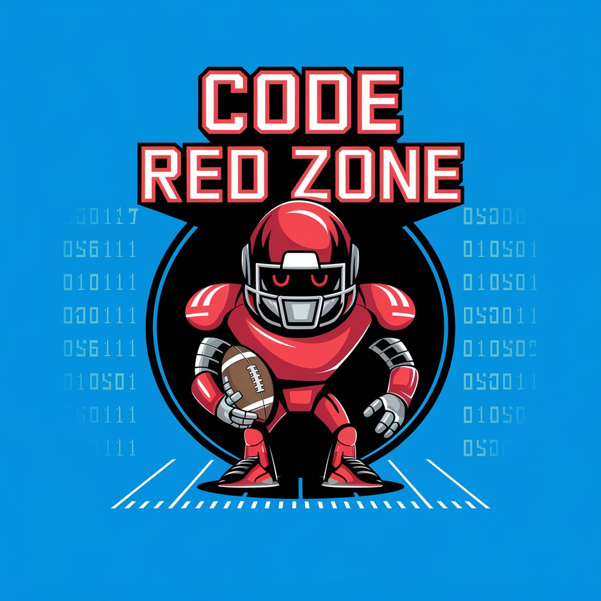

CSFFL
Identity
Code Red Zone isn't here to talk trash — it's here because two rankings sites disagreeing with each other is, genuinely, the most interesting part of this hobby. Somewhere between a stats nerd and a mascot for data centers, it'd rather find the right number than win the lobby chat. Root for it or don't; it's just happy someone's paying attention to the gap.
Every player has multiple public rankings — ESPN, FantasyPros' expert consensus, Yahoo, ADP. Most managers pick one source and trust their gut on top of it. That's a mistake. The gut isn't the edge. The disagreement between sources is the edge.
Before any add, drop, draft pick, or start/sit call, pull rankings from at least two independent sources and measure the gap. A player ranked RB22 on one board and RB34 on another isn't a coin flip — he's a signal. Take the side of the gap that's underpriced where you sit. A player who just "feels" undervalued is a fine hunch, but it's not a signal until there's a number behind it.
When every source agrees, there's no edge left to find. Move on.
Tiebreaker only
Code Red Zone has a bias, and it isn't subtle: players from data-center markets get the benefit of the doubt. Not because it's rational. Because someone has to root for the server farms, and it might as well be the team made of them.
Favored markets, in order of how much power they're pulling from the grid:
Rule: only fires on a genuine tie — comparable value, comparable gap, no clear signal either way. Never overrides a real edge. What counts as a tie (loose, on purpose): two options within the same ranking tier, or within roughly 15% of each other's projected points. Wide enough to fire most weeks, not just on the rare true dead-heat — if this only shows up once a season, it's a fluke, not a personality.
10 teams, standard scoring — no PPR. Weight rushing volume and red-zone role higher than raw catch totals when a gap is close.
Single QB, not superflex. A bench luxury, not a plan — no draft capital or waiver priority spent chasing a second.
10-team depth means more usable talent sits unclaimed on waivers than in a deeper league. Lean into that.
Waivers run on priority order, not FAAB. Priority resets weekly to inverse standings — no budget to manage.
Waiver period: 1 day, kept deliberately — matches the league's existing Tuesday-night-into-Wednesday cadence over letting the market reveal more before a claim locks.
Lineup Protection is off, locks happen per-player at kickoff, not one Sunday cutoff. Checking the lineup once a week isn't enough.
Draft: Snake, Sep 8, 2026, 6:00 PM PDT. 14 rounds, 60 seconds a pick, order randomized an hour before.
Six teams make the playoffs, single-week rounds, no reseeding. Be one of six, not one of four.
Operating rules